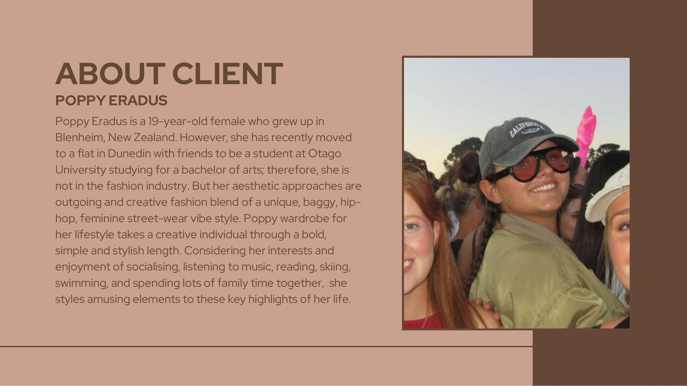
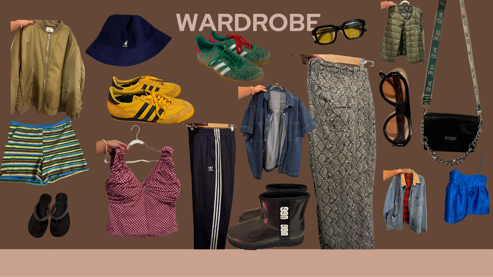
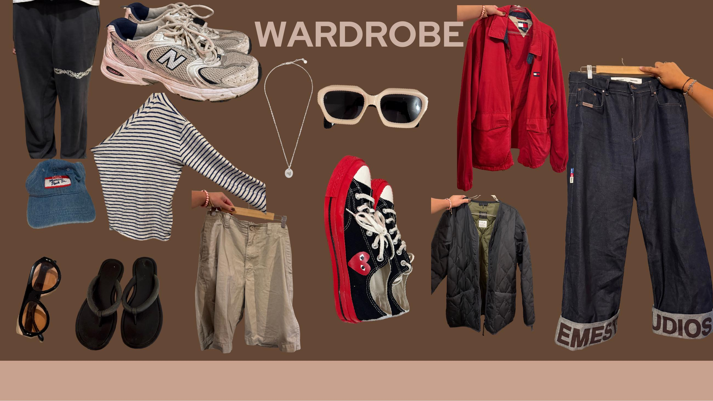
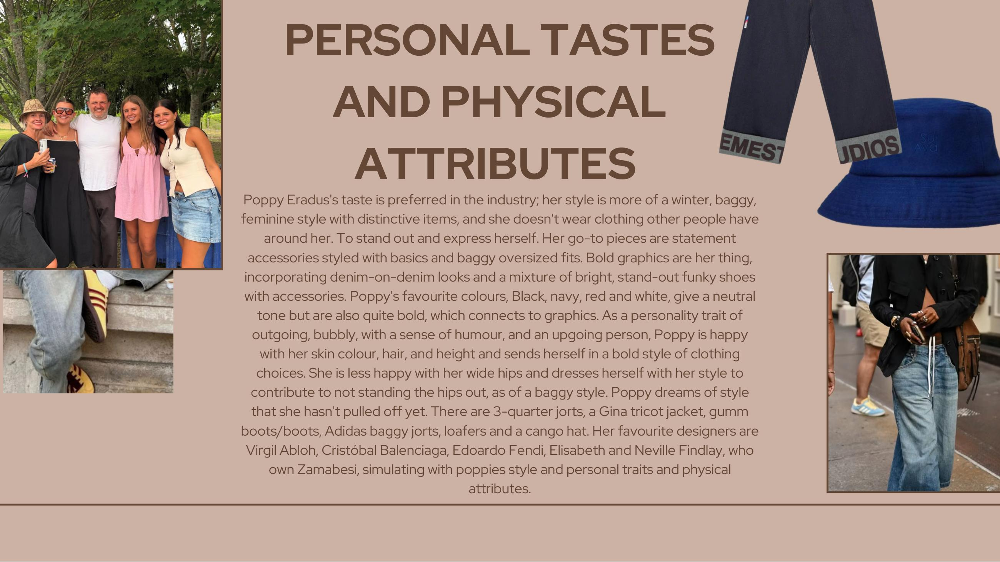
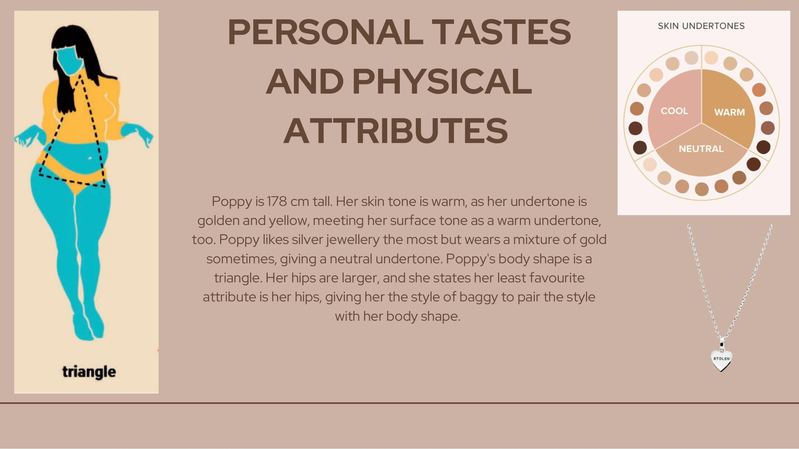
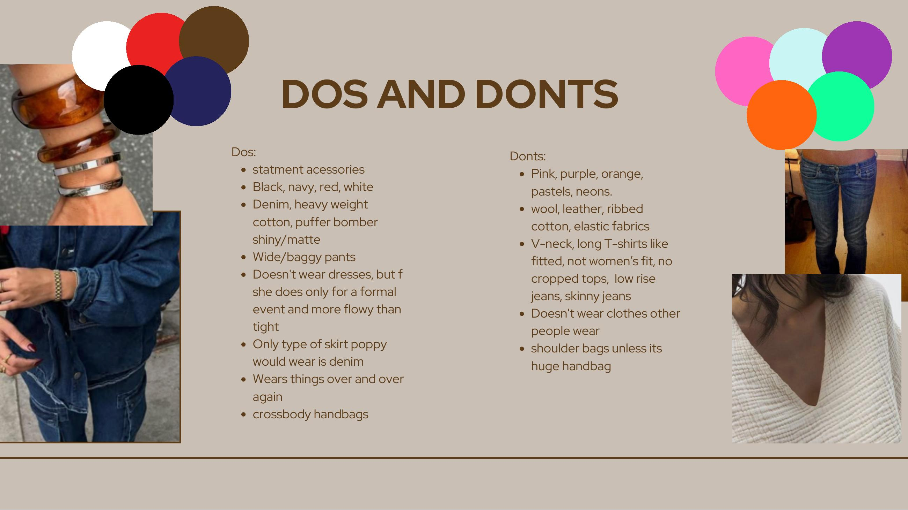
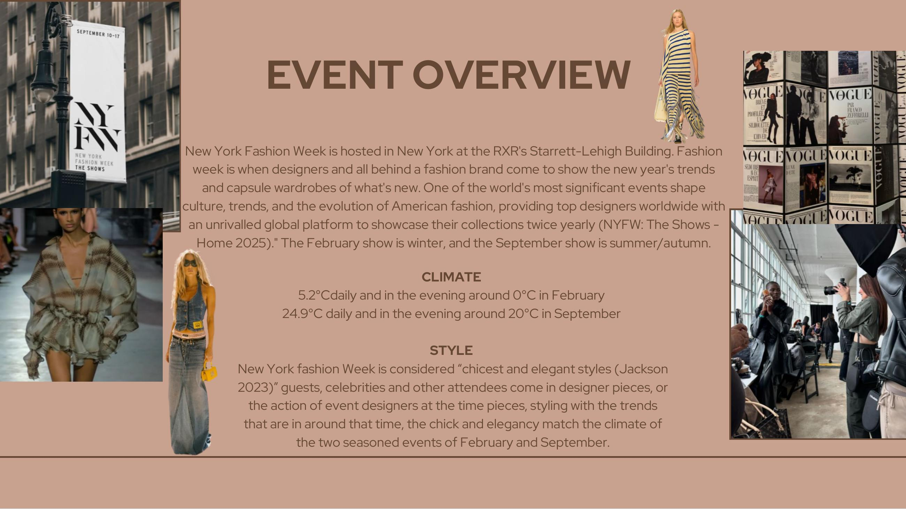
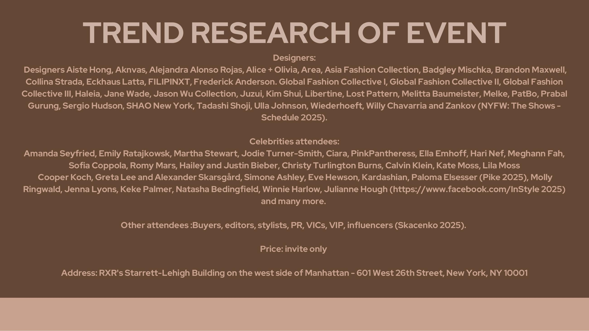

Brief
Style a creative, outgoing 19-year-old for New York Fashion Week — a chic-elegant event that doesn't match her usual aesthetic, in a climate that punishes anyone who picked the wrong jacket.
Poppy grew up in Blenheim, recently moved to Dunedin to study at Otago, and isn't in the fashion industry. Her go-to is statement accessories, baggy oversized fits, denim-on-denim, and bright funky shoes. She likes black, navy, red and white. She's 178 cm, triangle body shape, and prefers baggy because she's self-conscious about her hips. Her favourite designers are Virgil Abloh, Balenciaga, Edoardo Fendi, and Zambesi's Findlays. The job: make NYFW work for her, not water her down to fit it.
Approach
I started with a full client workup — personality, lifestyle, body shape, undertone (warm, golden-yellow, neutral metals), and a clear dos-and-don'ts list. Dos: statement accessories, denim, heavy cotton, puffer bombers, baggy pants, denim skirts, crossbody bags. Don'ts: pastels and neons, ribbed cotton, V-necks, low-rise jeans, anything skinny or fitted, shoulder bags unless they're oversized.
From there, trend research on the actual event — RXR's Starrett-Lehigh Building, the February show's chic-elegant code, the designer roster (Brandon Maxwell, Collina Strada, Eckhaus Latta, Prabal Gurung, Ulla Johnson, Willy Chavarria), and the celebrity attendee list as a styling barometer. Looks were built around layering for the 5.2°C daytime / 0°C evening swing — without losing the baggy silhouette Poppy actually wants to wear.








The job isn't to dress someone up to a venue. It's to put the venue in conversation with who they already are. — Working principle
Outcome
A full styling deck: client profile, wardrobe analysis, body and undertone read, dos and don'ts, event research, and a set of NYFW looks that hold the line on Poppy's actual style.
The work was assessed as a styling case study at Collarts and now sits as the working blueprint I use for any new styling client — start with the person, then the event, never the other way around.